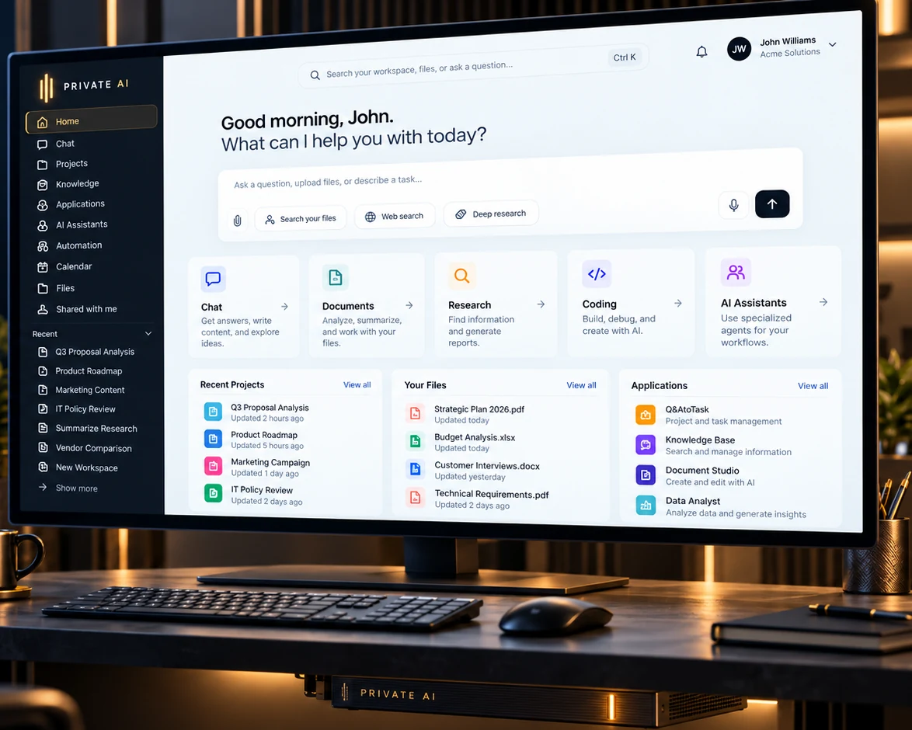

Understand your documents.
Search, summarize, compare, and inspect source references across the information your organization authorizes.
DOCUMENT INTELLIGENCEPowerful intelligence.
Personal infrastructure.
A complete AI environment for your organization. Use powerful models, work with private information, and run useful applications on computing infrastructure you control.

THE PRIVATE AI EXPERIENCE
Open your workspace. Ask questions, upload documents, develop ideas, analyze information, and use AI applications through one familiar interface.
A consistent place for people and their information, with computing services operating inside the environment you configure.
Good morning.
What can I help you with today?
THE INTELLIGENCE PLATFORM
The software brings models, knowledge, applications, and management together. Each capability has a clear place in the system and a familiar place in your workspace.
Concept architecture. Runtime selection and orchestration are under development.
Run and select local language, reasoning, vision, and specialist models suited to your work.
Find useful information across authorized collections and inspect the sources behind an answer.
Use chat, research, coding, analysis, and independent AI-enabled tools from a shared environment.
Manage the people, services, access boundaries, and operational health of your AI environment.
THE PRIVATE AI APPLIANCE
A low-profile computing appliance designed to place serious AI capability within reach. Our hardware approach combines enterprise accelerators, integrated management, and a carefully engineered enclosure.

Hardware and software designed to operate as one dependable environment.
Model and accelerator choices informed by the workload and operating budget.
Interconnect, cooling, controller, performance, and product packaging remain engineering work.
COMPUTE THAT FITS
Private AI is being developed as a common software environment that can use our integrated appliance and other compatible model-serving systems.
One software experience can serve different validated compute configurations. Third-party compatibility is a development objective and depends on hardware and runtime testing.
Our proposed complete hardware and software configuration.
Use compatible local hardware your organization already owns.
Connect supported model endpoints as requirements grow.
WHAT IT ENABLES
Private AI is designed for the everyday work that matters across professional services, engineering, research, and internal operations.
Search, summarize, compare, and inspect source references across the information your organization authorizes.
DOCUMENT INTELLIGENCEExplore local collections, policies, technical records, and the context behind decisions.
KNOWLEDGE RETRIEVALUse capable models to research questions, compare evidence, and prepare useful working material.
RESEARCH AND ANALYSISConnect approved applications and assistants with explicit permissions and human review.
TOOLS AND ASSISTANTSTRUST AND CONTROL
Local computing creates a practical foundation for organizations that want to govern sensitive information. Private AI is being designed around clear boundaries, verifiable sources, and controlled access.
Models and information services can operate within infrastructure your organization controls.
Users, applications, and information sources need explicit boundaries and accountable actions.
Source references and human review help make AI-supported work easier to verify.
VONARGO ENGINEERING
Enterprise compute, open models, and mature software can be assembled into a coherent product. The work is in the integration, testing, operations, and customer experience.
Our engineering focus: validate the complete system and document how it performs.
START THE CONVERSATION
Tell us what you'd like to run, what information matters, and what computing resources you have today.
Interested in the appliance, platform, infrastructure integration, or a technical partnership? Start here.
Talk to vonArgo Please do not send confidential documents or personal data in your first email.